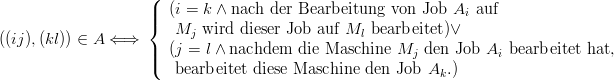
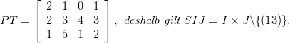

2.3.1 Pläne und Zeitpläne (Sequences and Schedules)
Zur Einführung der Begriffe Plan und Schedule werden die folgenden Graphen definiert, wobei die
Menge der Knoten gerade die Menge der Operationen SIJ ist:
- Der Graph der technologischen Reihenfolgen G(MO) enthält alle Bögen, die den
direkten Vorrangbedingungen der technologischen Reihenfolgen der Maschinen für die
Aufträge entsprechen.
- Der Graph der organisatorischen Reihenfolgen G(JO) enthält alle Bögen, die den
direkten Vorrangbedingungen der organisatorischen Reihenfolgen der Aufträge auf den
Maschinen entsprechen.
- Der Graph G(MO,JO) = (SIJ,A) enthält alle Bögen aus G(MO) und G(JO), d.h.

Eine Kombination von technologischen und organisatorischen Reihenfolgen wird zulässig genannt,
wenn der zugehörende Graph G(MO,JO) zyklenfrei ist. In diesem Fall heißt der Graph
Plangraph.
Beispiel 1 Drei Jobs sollen auf vier Maschinen bearbeitet werden.
Die Bearbeitungszeitmatrix PT und die technologischen und organisatorischen Reihenfolgen
sind gegeben durch

A1 : | M1 → M2 → M4 | | | M1 : | A1 → A2 → A3 |
A2 : | M2 → M4 → M1 → M3 | | | M2 : | A2 → A3 → A1 |
A3 : | M4 → M1 → M2 → M3 | | | M3 : | A3 → A2 |
| | | | M4 : | A3 → A1 → A2 |
|
Die folgende Abbildung zeigt die Graphen G(MO), G(JO) und G(MO,JO):
Diese Kombination von technologischen und organisatorischen Reihenfolgen ist nicht zulässig, da
der Digraph G(MO,JO) den Zyklus
enthält. Dann wäre jede Operation auf dem Zyklus Vorgänger und Nachfolger von sich selbst, was
natürlich logisch nicht geht.Wenn wir für die technologischen und organisatorischen Reihenfolgen die natürliche
Reihenfolge der Maschinen bzw. der Jobs wählen, kann der Digraph G(
MO,JO)
keine Zyklen
enthalten, da alle horizontalen Bögen von links nach rechts und alle vertikalen Bögen
von oben nach unten gerichtet sind. In diesem Fall ist der Digraph G(
MO,JO)
ein
Plangraph.
Jetzt wird jeder Knoten (ij) des Plangraphen G(MO,JO) mit der Bearbeitungszeit pij gewichtet.
Dann bezeichnet man einen Zeitplan der Bearbeitung aller Operationen als Schedule.
Schedules werden gewöhnlich durch die Start- oder Endzeitpunkte der Bearbeitung aller
Operationen beschrieben und durch Ganttdiagramme visualisiert, die maschinenorientiert
oder auftragsorientiert sein können. Es existieren die folgenden Klassen von Schedules:
Ein Schedule heißt semiaktiv, wenn keine Operation eher fertig werden kann, ohne dass man den
zugehörenden Plan ändert.
Ein Schedule heißt aktiv, wenn keine Operation früher fertig werden kann, ohne dass irgendeine
andere Operation später fertig wird.
Ein Schedule heißt non-delay, wenn keine Maschine stillsteht, solange es einen verfügbaren Job
gibt, der auf dieser Maschine zu bearbeiten ist.
Jeder non-delay Schedule ist aktiv und jeder aktive Schedule ist semiaktiv. Die Umkehrung ist im
allgemeinen nicht gültig.
Beispiel 2 Zu der Bearbeitungsmatrix aus Beispiel 1 ist der folgende azyklische Digraph
G(MO,JO) gegeben. Damit kann der zugehörende semiaktive Schedule in einem
auftragsorientierten Ganttdiagramm visualisiert werden. Zunächst werden alle Operationen
bearbeitet, die Quellen (Knoten ohne Vorgänger) im Plangraphen sind. Dann streicht
man die Quellen und alle von ihnen ausgehenden Bögen und ordnet die Operationen als
nächste an, die nun Quellen sind, usw. Der Schedule ist darüberhinaus aktiv, aber im
open-shop Fall nicht non-delay, da die Operation (11) zum Zeitpunkt 2 starten könnte.